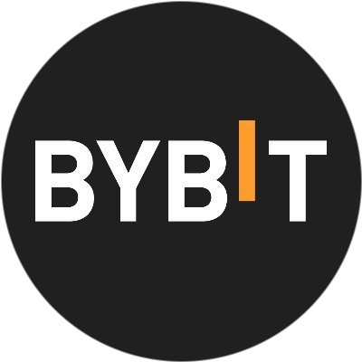
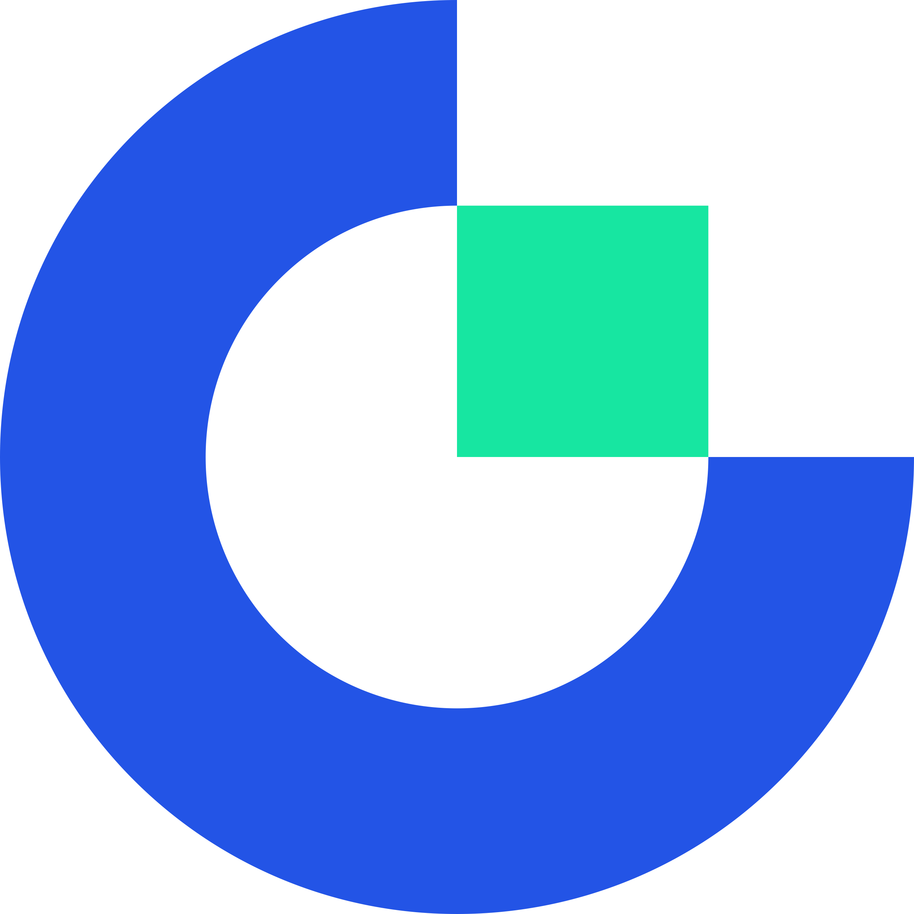
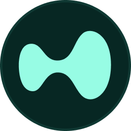
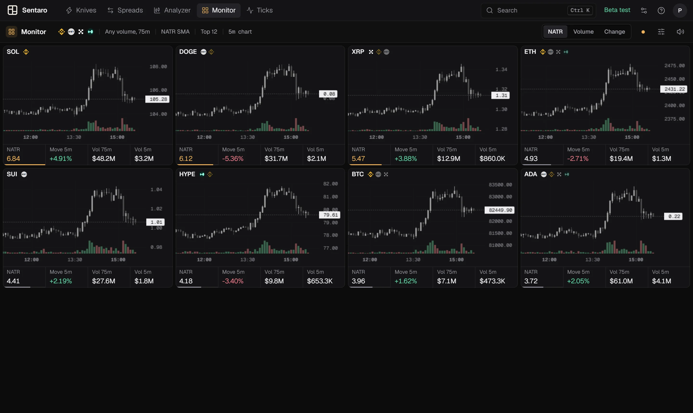
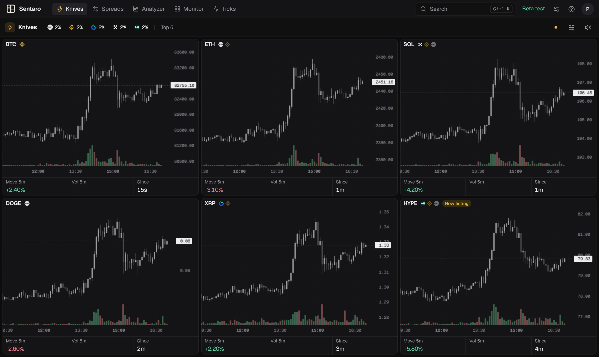
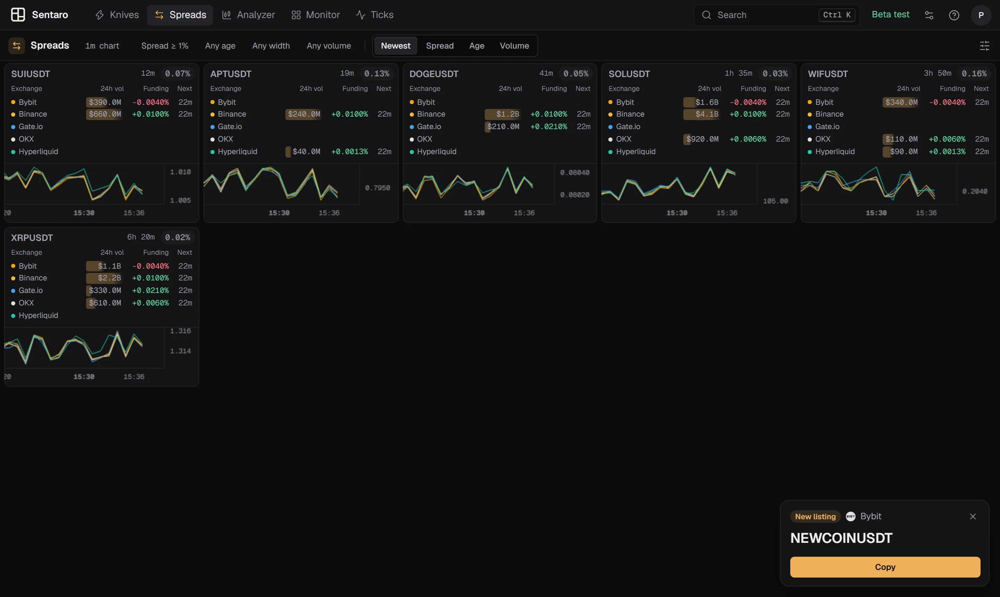
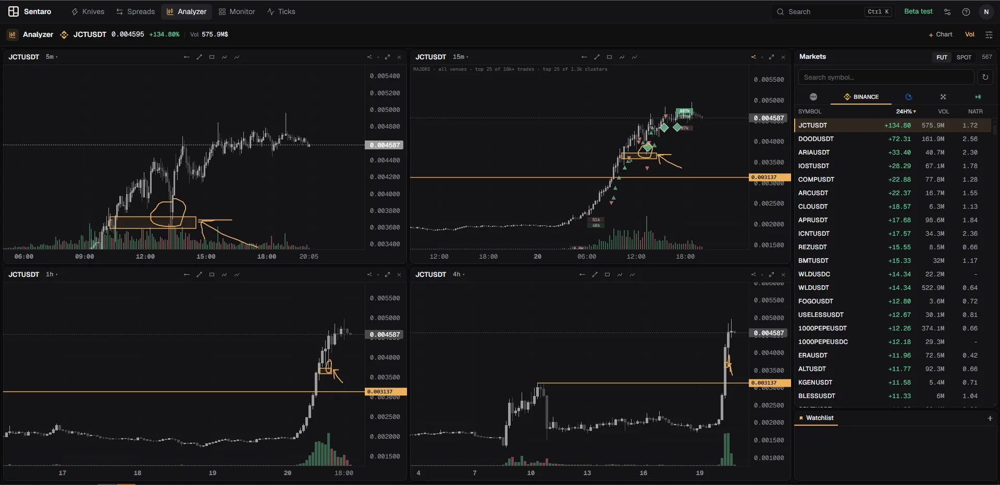
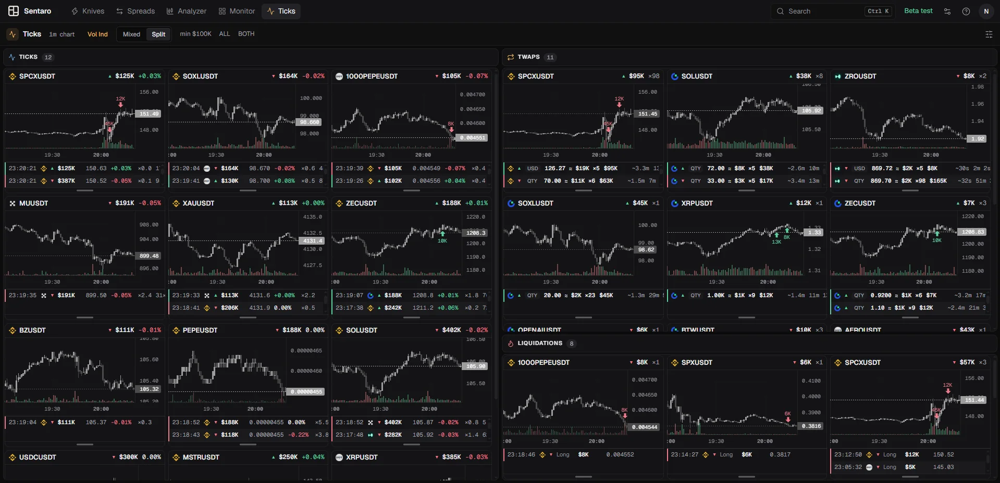

Alerts
It calls you when something happens.
New listings pop up the moment a coin starts trading, with one click to copy the symbol. Every alert has its own sound, so you know what happened before you look.
Price moves, spread gaps, big trades, TWAPs, liquidations and new listings from Binance, Bybit, OKX, Gate and Hyperliquid, live. In your browser or on Windows.

Bybit OKX
Gate
Hyperliquid
Knives
Sentaro watches every coin on five exchanges and surfaces the ones that just moved, on the 5-minute candle, as it happens.

Spreads
The same coin rarely costs the same everywhere. Spreads shows the gap live, with the volume and funding behind every price.

Analyzer
One coin, up to eight charts, on whichever exchange you trade. Sort the whole market and keep your watchlists beside it.

Monitor
A live leaderboard of volatility. Every coin ranked by NATR, volume or change, across all five exchanges.
Ticks · TWAPs · Liquidations
Three tools on the tape: every big aggressive trade the moment it prints, algorithms working a large order in small pieces, and forced closes. Each marked right on its coin's chart.

Alerts
New listings pop up the moment a coin starts trading, with one click to copy the symbol. Every alert has its own sound, so you know what happened before you look.
Web or Windows
Open it in any browser on Windows, macOS or Linux. Put tools side by side on tabs and switch with a key, in five themes. Nothing to install, always the latest version.
Open the web appEvery tool in its own window, spread across your monitors. Includes Terminal, an experimental tool for trading from the order book.
Download for WindowsFAQ
Yes. Everything is free for everyone during the beta: every tool, on the web and on Windows. No hidden tiers.
Bybit, Binance, Gate, OKX and Hyperliquid, all watched at once, plus Kraken spot in Ticks. More may come based on feedback.
No. The tools read public market data only. They never ask for API keys and cannot place trades. The one exception is Terminal on Windows, an experimental tool that is off by default and only works with trade-only keys you add yourself.
Either. They have the same tools and you sign in with the same account. The Windows app adds separate windows per tool and Terminal.
Yes, in the web app. The downloadable app is Windows-only for now.
SmartScreen flags any new app that hasn't built up downloads yet; it isn't a virus warning. Click "More info", then "Run anyway". It only happens once.
In the Telegram group. It's the fastest way to reach us.